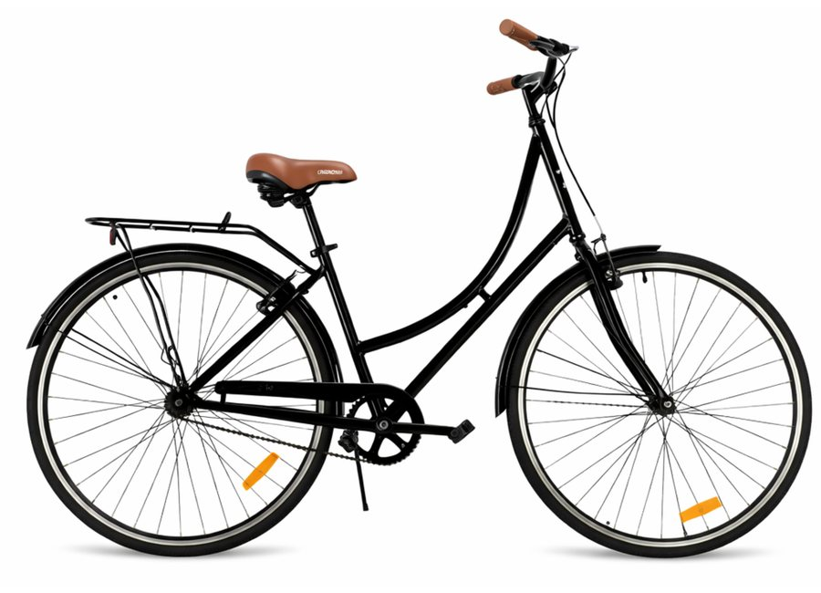

BicicletasUrbanas y de montaña
Fardella S.A. / Ciclismo
Todo para
rodar.
Bicicletas, repuestos y accesorios para acompañarte en la ciudad, la ruta y la montaña.
Explorar categoríasUNA SELECCIÓN PARA CADA CAMINO2026

BICICLETAS / CIUDAD Y MÁSRepuestosComponentes para tu bici
AccesoriosEquipamiento para salir
MayoristasConsultas para revendedores
Explorá Fardella
Más que
bicicletas.
Una selección del catálogo para equipar cada salida, desde la bicicleta completa hasta los detalles que hacen la diferencia.
Selección del catálogo
Elegí lo que
necesitás.
Algunos productos de las distintas categorías que trabajamos. Encontrá bicicletas, repuestos y accesorios en un solo lugar.
Precios de lista del catálogo de septiembre 2026, expresados sin IVA. Disponibilidad y condiciones comerciales sujetas a confirmación.
 FARDELLA / CICLISMO
FARDELLA / CICLISMOQuiénes somos
Una vida
sobre ruedas.
Fardella S.A. fabrica, importa y distribuye productos para el mundo de la bicicleta. Reunimos marcas y equipamiento para distintos estilos de ciclismo.
- Bicicletas para ciudad y montaña
- Componentes y repuestos
- Accesorios para cada salida
Marcas que trabajamos
Experiencia en
cada elección.
HutchinsonShimanoAudaxNamed SportBattle